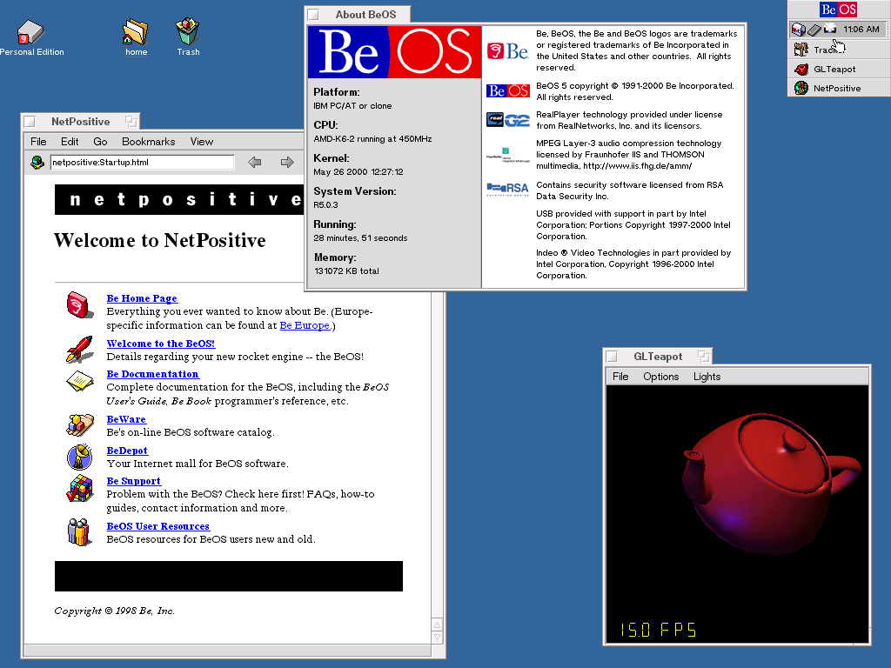
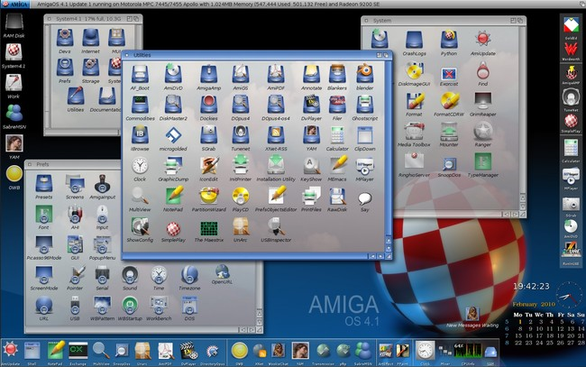

La historia de los sistemas operativos no se limita solo a los nombres más conocidos. A lo largo de las décadas, han surgido y desaparecido muchos sistemas innovadores que vale la pena recordar.
Desarrollado en los años 90 por Be Inc., BeOS fue un sistema operativo diseñado para la computación multimedia. Se destacó por su diseño optimizado para el procesamiento en tiempo real y su excelente rendimiento en tareas de audio y video. A pesar de su innovación, no pudo competir con la popularidad de Windows y Mac OS, y su desarrollo se detuvo a principios de los 2000.
Lanzado en 1985 por Commodore, AmigaOS fue el sistema operativo de la popular línea de computadoras Amiga. Fue notable por su capacidad de realizar multitarea de forma pre-emtiva, una característica avanzada para su época. AmigaOS fue muy apreciado por artistas, músicos y desarrolladores de videojuegos por su poder gráfico y de sonido. Aunque la plataforma ya no es tan común, su diseño influyó en muchos sistemas operativos posteriores.
Haiku es un proyecto de código abierto que busca recrear y continuar el legado de BeOS. Es un sistema operativo moderno que aún está en desarrollo, pero mantiene la filosofía original de BeOS: una interfaz de usuario limpia y un rendimiento rápido. Su objetivo es proporcionar una experiencia de usuario simple y eficiente para los amantes de los sistemas operativos menos convencionales.
 Volver al inicio
Volver al inicio